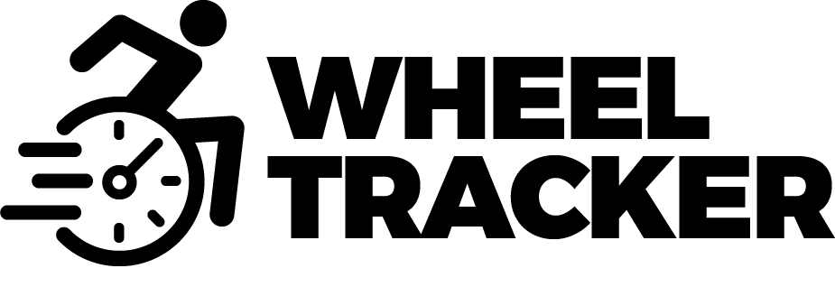
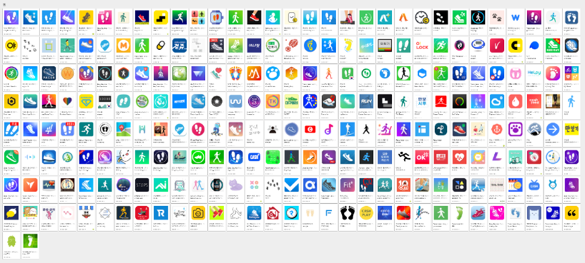

MORE
휠체어 사용자를 위한 만보기 어플
휠체어를 타고도 활발한 활동이 가능함을 휠체어 사용자의 역동적인 모습으로 표현하였고
그러기 위해서는 Wheel Tracker와 함께 운동량을 꾸준히 채워나가자는 의미를 담음
Wheel Tracker는 이런 의문점에서 시작되었습니다
Apple Watch가 필요없는 휠체어 만보기가 있다면?
한 가지를 측정해서 다양한 운동기록을 얻을 수 있다면?
수많은 만보기 앱들
일상적인 활동으로 건강을 관리하는 것이 트렌드

Wheel Tracker
일상 속에서 누릴 수 있는 수많은 경험을
휠체어를 사용하는 분들에게 선물해드리는 앱
누구에게
건강을 위해 운동을 하고싶은 휠체어 사용자
일상에서의 제약을 스스로 줄여나가고 싶은 휠체어 사용자
어떻게
운동량을 푸시 수, 이동거리, 칼로리, 활동시간으로 분석
성취감을 느낄 수 있는 UI로 인한 의욕 상승 효과
어떤 특징으로
1푸시 당 거리를 단위로 하는 만보기